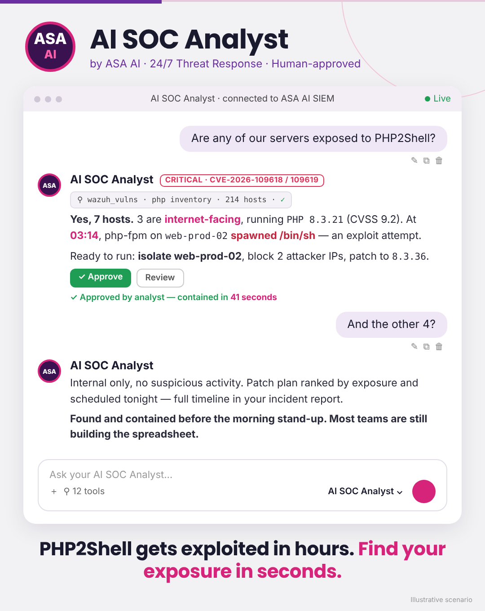

Leaked before the patch. Exploited before the disclosure. Millions of attempts within a day. The only question that matters now: which of your servers are exposed, and is anyone already inside?
30-minute live demo · On-prem · Your analysts approve every action

Illustrative scenario: one question, one answer, one click.
PHP powers a huge share of the web: CMSs, customer portals, hosting panels, internal tools you forgot you had.
Ask in plain English. Get an answer grounded in your SIEM and vulnerability data, not a dashboard to dig through.
Inventory across your fleet in seconds, with the exact PHP version on each server.
Internet-facing and business-critical hosts at the top. One clear patch plan to 8.5.12, 8.4.27, 8.3.36 or 8.2.35.
Watches for php-fpm and php-cgi spawning shells or unexpected child processes, the telltale sign of PHP2Shell.
Proposes isolation, IP blocking and patching. Nothing runs until your analyst clicks Approve. Every step is logged.
See how AI SOC Analyst answers "are we exposed?" on your own use cases. We'll walk you through triage, CVE prioritization and human-approved response, live.
On-prem · Fully auditable · Built for regulated environments (DORA, NIS2, GDPR)